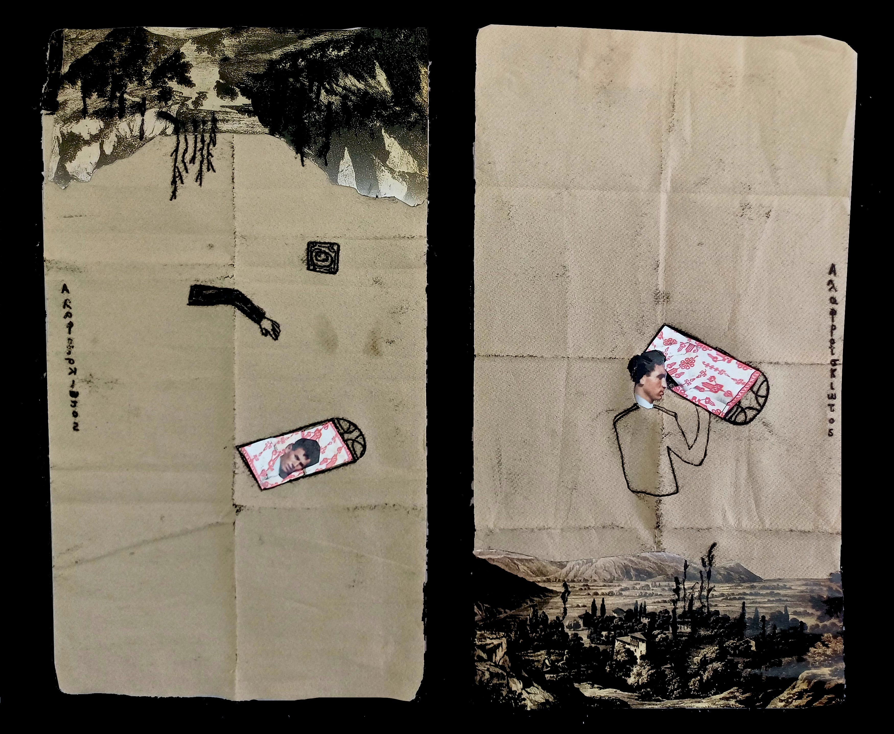

<html><title>Maggie Makri/Alafroiskiotos</title>
  <style>
    body {
      font-family: 'OCR A', Arial, sans-serif;
      /* Replace 'OCR A Extended' with the appropriate font name if it's different */
      background-color: #141414; /* Background color for the body */
     }
<body bgcolor="#141414" text="#ff0000" link="#ffffff" vlink="#ffffff"> 
<h2>An introduction to the Alafroiskiotos project</h2>
<h4>How did it came to be</h4>
<a href="cens03.html"><h3 align="right"><blink>Next</blink></h3></a> 
<center><br>
<h3>When customs officer insists the low, even Man
Ray's artistic picture must be marked at the "obscene" part. The
picture is from "MAN RAY, the photographer" published by Misuzu Book Publishing,
Tokyo.</h3><p> <p>
</body></html>
